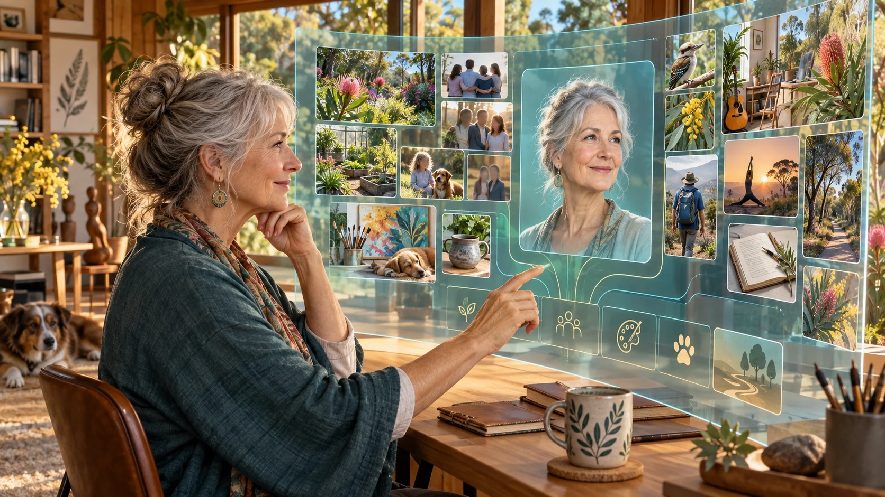

Joyful Responsible Abundance
The gift of 82 Claytons Road could connect an enduring local act of care with a question facing the whole world: as artificial intelligence expands what humanity can do, what kind of life are we trying to make possible? My September 2026 personal contribution to the 81st United Nations General Assembly offers a guiding idea: Joyful Responsible Abundance. [3]
Joyful asks what makes life worth living: relationships, belonging, discovery and creativity. Responsible asks who benefits, who bears the costs and what we pass to future generations. Abundance asks how useful care, knowledge, tools and opportunity can become widely available. Together, these questions invite people to explore how greater intelligence could expand our freedom to live well and our capacity to help one another.
The order of those words opens further questions. Could responsibility become abundant through people finding satisfaction in service? Could joy grow through generosity, learning and shared achievement? Different cultures, faiths and generations will answer differently. Those differences are valuable knowledge about the futures people actually want.
Human alignment comes into the conversation
Human self-alignment means examining how our actions relate to our values. Aura Genesis, introduced on page 6, proposes a process for developing a digital aura: an evolving model of a person's life, personality and aspirations. Aura of Intelligence would use that understanding through a personal AI companion and avatar, helping people explore choices and possible futures. People participate in shaping how they are represented.
Personal reflection can inform a larger conversation. What do neighbours agree is worth protecting? Where do priorities differ? How can institutions honour both shared responsibilities and individual freedom?
With permission, these insights could inform AI alignment: designing and evaluating artificial intelligence so that it serves human purposes, preserves meaningful choices and remains open to correction. A richer understanding of what people value becomes a resource for that work.

A local contribution to a wider human endeavour
GAJRA Earth, the proposed Global Association for Joyful Responsible Abundance on Earth, would connect locally shaped associations around the world. A gajra is a flower garland: distinct flowers brought into relationship. The network follows that principle, linking communities that retain their cultures, sovereignty and judgement while sharing discoveries and practical work. [3]
Minjerribah could contribute through care, research, art and intergenerational learning. A young volunteer, a person living with dementia, an Elder, a clinician and a parish member each bring knowledge that a purely technical project could miss.
For the Diocese, this is an opportunity to carry stewardship, service and human dignity into the age of intelligence, in a place where a local community helps shape a future worth sharing.